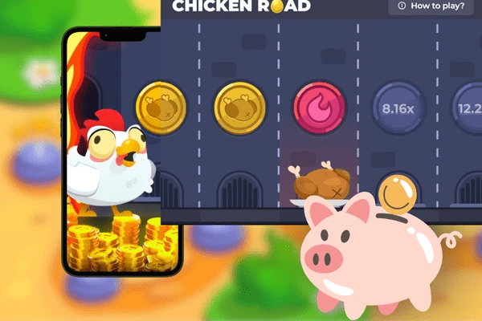

Il Chicken Road game demo offre un’esperienza unica che combina semplicità, divertimento e tensione. A differenza delle slot tradizionali, questo crash game ti mette al comando, permettendoti di decidere quando incassare le vincite con il pulsante “Cash Out”. La Chicken Road demo ti permette di esplorare il gameplay senza rischi, testando i quattro livelli di difficoltà (Easy, Medium, Hard, Hardcore) e familiarizzando con le meccaniche del gioco. La versione Chicken Road casino demo è disponibile su piattaforme come SlotCatalog, 1Win e chicken-road.net, rendendo facile l’accesso per i giocatori italiani.
Chicken Road Demo: Scopri l’Emozione
Il Chicken Road demo è il modo perfetto per immergersi in uno dei giochi d’azzardo online più coinvolgenti del 2025, senza rischiare un solo centesimo. Sviluppato da InOut Games, il Chicken Road game demo è un crash game arcade che invita i giocatori a guidare un simpatico pollo attraverso un percorso pieno di insidie, con l’obiettivo di raggiungere l’uovo d’oro e accumulare moltiplicatori.
Introduzione al Fascino del Chicken Road Game Demo
In questo articolo, analizzeremo come funziona il demo Chicken Road, i vantaggi di giocare in modalità gratuita, le strategie per prepararti al gioco con denaro reale e molto altro. Includeremo una tabella informativa e una sezione FAQ per rispondere a tutte le tue domande sul Chicken Road demo play.
Perché Provare il Chicken Road Demo
Il Chicken Road demo è un’opportunità imperdibile per scoprire un gioco che sta rivoluzionando il panorama dei casinò online. Ecco perché il Chicken Road game demo è così popolare tra i giocatori italiani e quali benefici offre.

Accesso Gratuito e Senza Registrazione
Uno dei principali vantaggi del Chicken Road casino demo è che non richiede registrazione o deposito. Puoi accedere alla versione gratuita su piattaforme come SlotCatalog o chicken-road.net senza alcun impegno. Questo rende il Chicken Road demo play ideale per chi vuole divertirsi o testare strategie senza spendere denaro.
Familiarizzare con le Meccaniche di Gioco
Il demo Chicken Road ti permette di esplorare il gameplay interattivo del gioco, che si distingue per il suo approccio strategico. A differenza dei giochi di slot passivi, il Chicken Road game demo ti dà il controllo su ogni passo del pollo, permettendoti di sperimentare i diversi livelli di difficoltà e capire come i moltiplicatori aumentano con il rischio. È il modo perfetto per prepararti al Chicken Road demo casino con denaro reale.
Caratteristiche Principali del Chicken Road Casino Demo
Il Chicken Road casino demo replica fedelmente la versione a denaro reale, offrendo un’esperienza completa con un RTP del 98% e una vincita massima potenziale di x3,203,384.8. Di seguito, analizziamo le caratteristiche principali che rendono il Chicken Road game demo così accattivante.
Gameplay e Design
Il Chicken Road demo presenta un design semplice ma accattivante, con un pollo dallo sguardo deciso che affronta un percorso pieno di botole. La grafica arcade e le animazioni vivaci, accompagnate da una colonna sonora coinvolgente, creano un’atmosfera nostalgica ma moderna. Il gioco si basa su una meccanica di crash, dove ogni passo aumenta il moltiplicatore, ma il rischio di una botola infuocata tiene alta la tensione.
Livelli di Difficoltà e Moltiplicatori
Il Chicken Road demo play offre quattro livelli di difficoltà: Easy (24 botole, moltiplicatori da x1.02 a x24.5), Medium (22 botole), Hard (20 botole) e Hardcore (18 botole, fino a x3,203,384.8). Ogni livello regola la volatilità e il potenziale di vincita, permettendoti di scegliere il rischio più adatto al tuo stile di gioco. La Chicken Road casino demo ti consente di testare questi livelli senza rischi, aiutandoti a capire quale approccio preferisci.
Come Giocare al Chicken Road Demo Play
Iniziare con il Chicken Road demo play è semplice e non richiede esperienza previa. Ecco una guida passo-passo per immergerti nel Chicken Road game demo e alcuni suggerimenti per ottenere il massimo dalla tua esperienza.
Impostazione della Scommessa Virtuale
Nel Chicken Road casino demo, puoi impostare una scommessa virtuale compresa tra 0,01€ e 200€. Anche se stai usando crediti virtuali, sperimentare con diversi importi ti aiuta a capire come le scommesse influenzano i moltiplicatori. Seleziona il livello di difficoltà desiderato (Easy, Medium, Hard o Hardcore) e premi il pulsante “Play” per far avanzare il pollo.
Gestione del Cash Out
La chiave del Chicken Road demo è il pulsante “Cash Out”, che ti permette di incassare le vincite virtuali dopo ogni passo sicuro. Più a lungo il pollo avanza, maggiore è il moltiplicatore, ma il rischio di una botola infuocata aumenta. Prova a bilanciare rischio e ricompensa per massimizzare le tue vincite virtuali nel Chicken Road demo play.
Strategie per il Chicken Road Demo Casino
Anche se il Chicken Road demo è un gioco gratuito, adottare alcune strategie può aiutarti a prepararti per la versione con denaro reale. Ecco alcuni consigli per ottimizzare la tua esperienza con il Chicken Road game demo.
Testare i Livelli di Difficoltà
Il Chicken Road casino demo ti permette di sperimentare i quattro livelli di difficoltà. Inizia con il livello Easy per familiarizzare con il gameplay e passa gradualmente a Hard o Hardcore per testare moltiplicatori più alti. Questo approccio ti aiuta a capire come il rischio influisce sulle vincite potenziali.
Simulare Sessioni di Gioco Reali
Usa il Chicken Road demo play per simulare sessioni di gioco realistiche. Ad esempio, imposta un numero fisso di giri (come 50) e osserva con quale frequenza riesci a incassare vincite virtuali. Questo ti dà un’idea della volatilità del gioco e ti prepara per il Chicken Road demo casino con denaro reale.
Sperimentare con il Cash Out
Il pulsante “Cash Out” è il cuore del Chicken Road game demo. Prova a incassare a diversi moltiplicatori (ad esempio, x1.5, x5, x10) per capire quale strategia si adatta meglio al tuo stile. Incassare presto offre vincite più sicure ma più basse, mentre rischiare di più può portare a moltiplicatori elevati.
Cercare Promozioni nei Casinò
Anche se stai giocando al Chicken Road demo, tieni d’occhio le promozioni dei casinò online. Piattaforme come 1Win offrono bonus di benvenuto (ad esempio, 100% fino a 170€) che puoi usare per il Chicken Road casino demo con denaro reale. Familiarizzare con il gioco in modalità demo ti prepara a sfruttare al meglio queste offerte.
Tabella Informativa: Caratteristiche del Chicken Road Casino Demo
|
Caratteristica |
Dettagli |
|
Nome del Gioco |
Chicken Road |
|
Sviluppatore |
InOut Games |
|
Tipologia |
Crash Game |
|
RTP |
98% (varia in base al livello di difficoltà) |
|
Volatilità |
Regolabile (Easy, Medium, Hard, Hardcore) |
|
Scommessa Virtuale Min/Max |
0,01€ - 200€ |
|
Vincita Massima |
x3,203,384.8 (livello Hardcore, soggetta a limiti del casinò) |
|
Funzionalità Speciali |
Cash Out, Provably Fair, scelta del livello di difficoltà |
|
Disponibilità Demo |
Sì, su piattaforme come chicken-road.net, SlotCatalog e casinò partner |
|
Piattaforme Supportate |
Desktop, iOS, Android (HTML5, senza download) |
Questa tabella riassume le caratteristiche principali del Chicken Road demo, offrendo una panoramica utile per i giocatori italiani.
FAQ sul Chicken Road Demo
Il Chicken Road demo è una versione gratuita del crash game arcade sviluppato da InOut Games. Ti permette di guidare un pollo attraverso un percorso di botole, testando i moltiplicatori e i livelli di difficoltà senza rischiare denaro reale.
Puoi giocare al Chicken Road game demo su piattaforme come chicken-road.net, SlotCatalog o casinò partner come 1Win e Mostbet. Non è richiesta registrazione per la modalità demo.
Sì, il Chicken Road casino demo replica fedelmente la versione a denaro reale, incluse grafica, meccaniche e livelli di difficoltà. L’unica differenza è che usi crediti virtuali.
No, il Chicken Road demo play è solo per divertimento e non offre vincite in denaro reale. È progettato per aiutarti a familiarizzare con il gioco prima di passare alla modalità con denaro reale.
Il Chicken Road demo casino offre quattro livelli: Easy (24 botole, x1.02-x24.5), Medium (22 botole), Hard (20 botole) e Hardcore (18 botole, fino a x3,203,384.8). Ogni livello regola il rischio e il potenziale di vincita.
Il Chicken Road game demo è disponibile su piattaforme come chicken-road.net, SlotCatalog e casinò online come 1Win e Mostbet, che offrono la modalità demo senza registrazione.
Conclusione: Perché Scegliere il Chicken Road Demo
Il Chicken Road demo è il modo ideale per scoprire un crash game che unisce semplicità, strategia e adrenalina. Con un RTP del 98%, la tecnologia Provably Fair e la possibilità di scegliere tra quattro livelli di difficoltà, il Chicken Road game demo offre un’esperienza coinvolgente per giocatori di ogni livello. La Chicken Road casino demo ti permette di testare il gameplay, sperimentare strategie e familiarizzare con il pulsante “Cash Out” senza alcun rischio.
Per ottenere il massimo dal Chicken Road demo play, ti consigliamo di provare diversi livelli di difficoltà, simulare sessioni di gioco reali e tenere d’occhio le promozioni dei casinò per quando deciderai di passare alla modalità con denaro reale. Con il suo design accattivante e il gameplay interattivo, il Chicken Road demo casino è destinato a rimanere una scelta popolare tra i giocatori italiani. Inizia oggi la tua avventura con il demo Chicken Road e preparati a guidare il tuo pollo verso l’uovo d’oro!